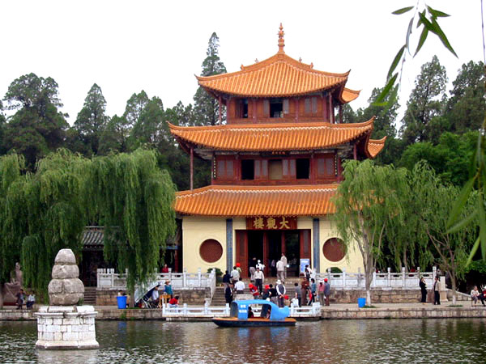
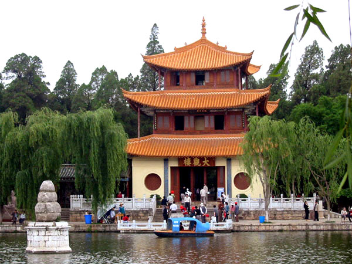

Climate
Kunming is located at a pleateau with an average elevation of 1891m relative to sea level. Kunming has a subtropical monsoon climate that gives it plenty of precipitations for agriculture. Under the impact of warm and humid air flow from southwestern Indian Ocean, Kunming enjoys a long period of sunshine with a short period of frost.The average annual temperature is 15 degress Celcius. Therefore, the summer in Kunming is not very hot while the winter is not very cold. This rare feature gives Kunming its good name of "Spring City". The following chart shows the monthly temperature of Kunming in 2014:
Kunming's Monthly Average Temperature(2014)
| Month | January | February | March | April | May | June | July | August | September | October | November | December |
|---|---|---|---|---|---|---|---|---|---|---|---|---|
| Average Temperature(Celcius) | 8.1 | 9.9 | 13.2 | 16.6 | 19.0 | 19.9 | 19.8 | 19.4 | 17.8 | 15.4 | 11.6 | 8.2 |
You can easily see how mild the climate is in Kunming!
Food and Tourist Attractions

Some foods you cannot miss when you visit Kunming:
- Rice Noodles
- Er Kuai(rice-flour cake)
- Wild Mushroom


When you visit Kunming, make sure to check out the following sites:
- Stone Forest:a famous Karst landscape 86km away from Kunming.
- Dian Lake: the sixth largest freshwater lake in China.
- Minority Village: You can see the customs and lifestyles of more than 23 minorities here.
- Daguan Pavillion: A place built by Emperor Kangxi in Qing dynasty. The pavillion can best view both the Dian Lake and Xi mountain.
 


Kunming attracts numerous tourists every year with its beautiful natural scenearies, its friendly weather and its unadorned nature. If you want to visit Kunming, make sure you visit this comprehensive travel guide for more information: